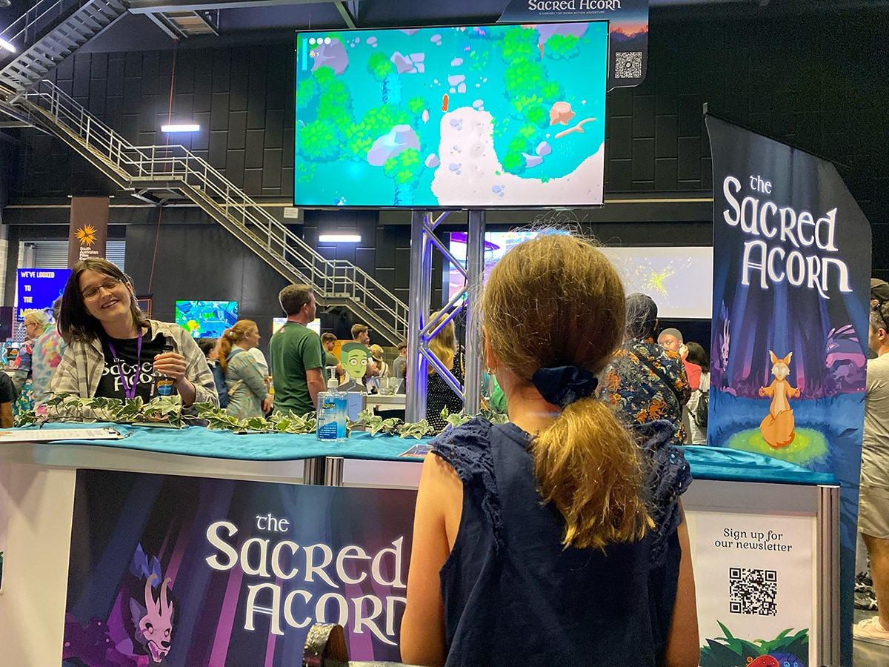

Effects of Public Funding in Indie Video Game Development: Australia and the UK.

South Australian Game Exhibition SAGE 2024. Photo by Raman Voranau
Are you running a video game project that has received public funding in Australia or in the UK?
If so, your experience could contribute to this PhD research. The study examines how public funding influences indie video game studios, including solo developers. It compares the impacts on video game teams in Australia and the UK, which exemplify two distinct funding approaches.
Interested in contributing?
Please send a short message to Raman Voranau, a PhD scholar at the University of South Australia, raman.voranau@mymail.unisa.edu.au.
Raman will follow up to schedule an online conversation at a time convenient for you.
Research Question
How does participation in funding programmes contribute to innovation, inclusion, and the sustainability of careers and businesses within small to medium-sized video game studios?
Significance of the Study
Justification
Project-based work in the creative industries is often unsustainable, exacerbating inequalities and precarity (Eikhof, 2020; Eikhof & Warhurst, 2013). Indie video game studios can potentially offer better control over intellectual property, improved gender inclusion, and accelerated innovation (Keogh, 2021; Tsang, 2021; Weststar & Legault, 2018). However, the combination of artistic, commercial, and technological demands in video game production poses significant challenges to individuals aiming to build sustainable careers or businesses in the industry (Snowball et al., 2021; Tschang, 2007).
Public programmes are designed to enhance working conditions in the video game industry, promoting inclusion, innovation, and business sustainability while generating broader societal benefits (Kerr, 2017; Perks & Whitson, 2022). Given the changeable nature of the video game industry and the diverse policies governing it, contextual factors vary significantly across countries (Kerr, 2017). A comparative approach can reveal best practices for fostering business sustainability in creative industries and illustrate how public funding benefit small and medium-sized video game studios (Cohendet et al., 2020).
Research Contribution
This study responds to calls for exploring new dimensions of inclusion, innovation, and business sustainability in indie studios across different national contexts (Perks & Whitson, 2022; Weststar & Legault, 2018; Miozzo et al., 2023). These issues are especially relevant within the tension between creativity and rationality in the industry.
Comparative Context
The study compares video game production in Australia and the UK, two countries with distinct funding policy frameworks. In line with its recent cultural policy approach, Australia’s funding initiatives primarily view video games as a form of artistic expression (Commonwealth of Australia, 2023; Keogh, 2023). The UK funding policies, while recognising the role of creativity, place significant emphasis on the economic output, as well as the innovative and technological significance of the video game industry (Webber, 2020; Mullen et al., 2022; Meyrick, 2024).
The research aims to identify the nuanced effects of public funding on video game studios and how these outcomes differ across the two national contexts.
Ethics Approval
This study has been approved by the UniSA Business Negligible Research Ethics Committee (Approval Number: 023A-2024). If you have any ethical concerns about the project or questions about your rights as a participant, please contact: BIS-Research@unisa.edu.au, +61 8 8302 0245
References
- Cohendet, P., Simon, L., & Mehouachi, C. (2020). From business ecosystems to ecosystems of innovation: the case of the video game industry in Montréal. Industry and innovation, 1-31. https://doi.org/10.1080/13662716.2020.1793737
- Commonwealth of Australia. (2023). National Cultural Policy—Revive: a place for every story, a story for every place. Australian Government. Department of Infrastructure, Transport, Regional Development, Communications and the Arts. Office for the Arts. https://www.arts.gov.au/sites/default/files/documents/national-culturalpolicy-8february2023.pdf
- Eikhof, D. R. (2020). COVID-19, inclusion and workforce diversity in the cultural economy: what now, what next? Cultural Trends, 29(3), 234–250. https://doi.org/10.1080/09548963.2020.1802202
- Eikhof, D. R., & Warhurst, C. (2013). The promised land? Why social inequalities are systemic in the creative industries. Employee Relations, 35(5), 495-508. https://doi.org/10.1108/ER-08-2012-0061
- Keogh, B. (2021). The Cultural Field of Video Game Production in Australia. Games and Culture, 16(1), 116–135. https://doi.org/10.1177/1555412019873746
- Keogh, B. (2023). Finally, Australia sees video games are important – but it can’t be only because they make money. The Guardian. https://www.theguardian.com/games/2023/mar/06/finally-australia-sees-video-games-are-important-but-it-cant-be-only-because-they-make-money
- Kerr, A. (2017). Global games: Production, circulation and policy in the networked era. Taylor & Francis
- Meyrick, C. (2024). The video games industry: is more support needed for this UK success story? Economics Observatory. https://www.economicsobservatory.com/the-video-games-industry-is-more-support-needed-for-this-uk-success-story
- Miozzo, M., Storz, C., & Casper, S. (2023). Digital creatives and digital engineers: entrepreneurial firms, institutional context, and the organization of innovation. Socio-Economic Review. https://doi.org/10.1093/ser/mwad057
- Mullen, H., Barr, M., Watson, L., Mason, C., Hruskova, M., & Naborowski, C. (2022). Scotland’s Games Ecosystem: The State of Play: Challenges and Opportunities. University of Glasgow and University of Stirling. https://eprints.gla.ac.uk/284015/
- Perks, M. E., & Whitson, J. R. (2022). Inclusion, Access, and Equity: Diversity Initiatives in Canada’s Game Industry. In C. Thompson & M. Campbell (Eds.), Creative Industries in Canada (pp. 131-156). Canadian Scholars.
- Snowball, J., Tarentaal, D., & Sapsed, J. (2021). Innovation and Diversity in the Digital Cultural and Creative Industries. Journal of cultural economics, 45, 705–733. https://doi.org/10.1007/s10824-021-09420-9
- Tsang, D. (2021). Innovation in the British Video Game Industry since 1978. Business History Review, 95(3), 543-567. https://doi.org/10.1017/S0007680521000398
- Tschang, F. T. (2007). Balancing the Tensions Between Rationalization and Creativity in the Video Games Industry. Organization science, 18(6), 989-1005. https://doi.org/10.1287/orsc.1070.0299
- Webber, N. (2020). The Britishness of ‘British Video Games’. International journal of cultural policy, 26(2), 135-149. https://doi.org/10.1080/10286632.2018.1448804
- Weststar, J., & Legault, M.-J. (2018). Women’s Experiences on the Path to a Career in Game Development. In K. L. Gray, G. Voorhees, & E. Vossen (Eds.), Feminism in Play (pp. 105-123). Springer International Publishing. https://doi.org/10.1007/978-3-319-90539-6_7